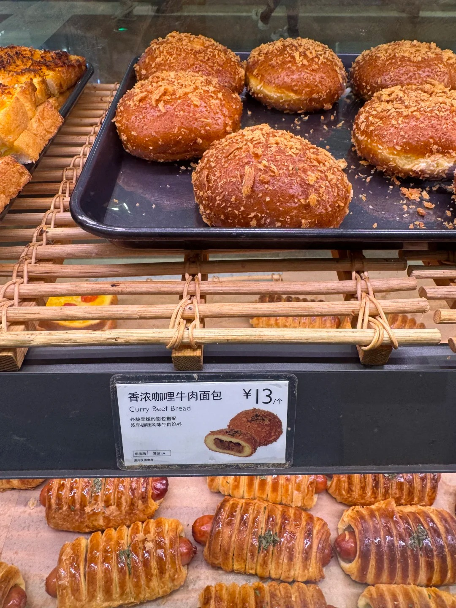
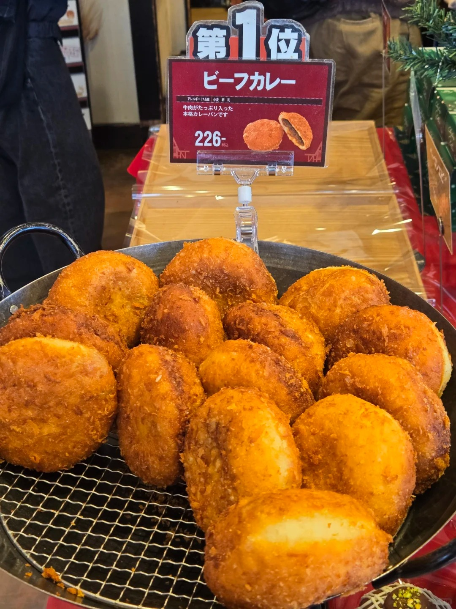

日式咖喱包



日式咖喱包外皮酥脆可口，内部的面包柔软有弹性，咖喱馅味道浓郁，带有微微的辛辣味和独特的香料香气，不同的店家可能会根据自己的配方加入一些独特的调料，使得口味略有差异。有的咖喱包还会加入芝士等食材，增加奶香和拉丝的效果。东京都江东区的 “名花堂”（现名 “カトレア”）第 2 代店主中田豊治在 1927 年开创了咖喱面包做法的先河，当时是 “把有馅儿的面包炸得像炸猪排一样的洋食面包”。 咖喱包在日本是一种非常常见的街头美食和便利店食品，它体现了日本饮食文化对外来食材和烹饪方式的融合与创新。2023 年，7-11 的 “店内现炸咖喱面包” 共售出 7698 万 7667 个，被吉尼斯世界纪录认证为 “年度销量最高的现炸咖喱面包品牌”。它常被作为早餐或午餐的选择，也可作为零食，在日本的大街小巷、便利店、面包店都能轻易买到。
制作方法：